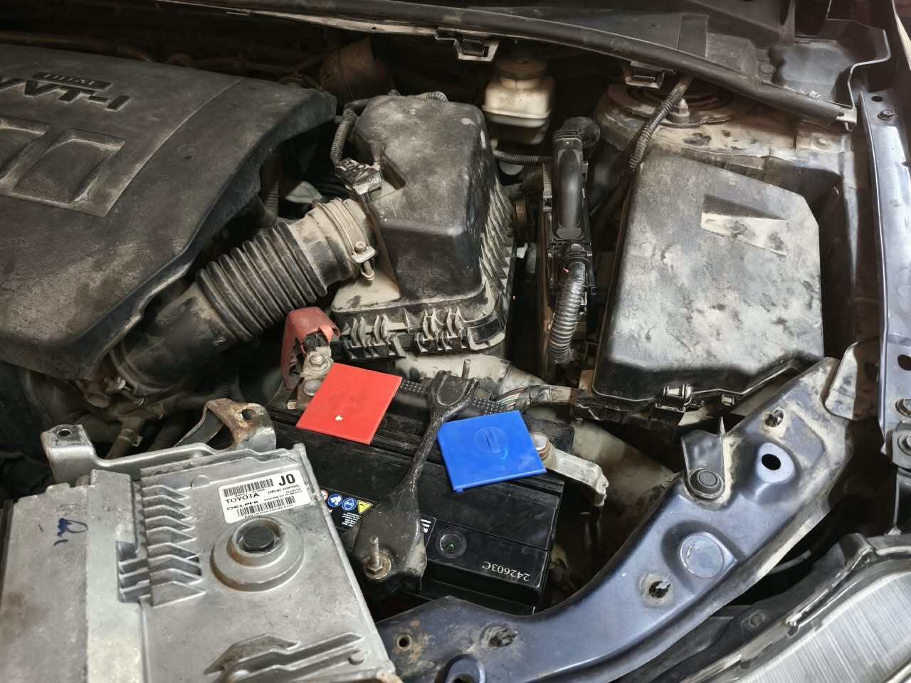

🚗 Toyota Corolla 2012 — неисправен ЭБУ двигателя: замена и привязка к иммобилайзеру
В работу поступил Toyota Corolla 2012 года выпуска с неисправностью электронного блока управления двигателем (ЭБУ).
Для восстановления работоспособности автомобиля потребовались проверка автокомпьютера, подбор аналогичного блока и его программная привязка к штатному иммобилайзеру.
💻 Диагностика блока управления двигателем
После демонтажа и вскрытия ЭБУ провели осмотр электронной платы.
В ходе проверки установили:
✅ Силовая часть блока управления исправна.
⚠️ Неисправность связана с процессорной частью ЭБУ.
Было принято решение заменить неисправный блок управления двигателем.
🔍 Подбор и замена ЭБУ Toyota Corolla
Для замены подобрали аналогичный блок управления с совпадающими заводскими номерами.
После установки нового блока потребовалась его программная привязка к штатной системе иммобилайзера автомобиля.
🔧 Привязка ЭБУ к иммобилайзеру

С помощью специализированного диагностического оборудования выполнили процедуру согласования электронного блока с системой автомобиля.
Процедура заняла около 35 минут.
Во время программирования:
🔹 Водительская дверь оставалась открытой.
🔹 Остальные двери были закрыты.
🔹 На панели приборов периодически мигали различные индикаторы, включая ABS и Check Engine.
🔹 Диагностическое оборудование выполняло регистрацию блока управления.
После завершения процедуры выключили зажигание, затем включили его повторно и отключили диагностический сканер.
✅ Результат — Toyota Corolla запустилась!
После программной привязки выполнили контрольный запуск двигателя.
✅ Заменённый ЭБУ успешно зарегистрирован.
✅ Иммобилайзер согласован с блоком управления.
✅ Двигатель успешно запустился.
✅ Работоспособность автомобиля восстановлена.
Неисправность удалось устранить заменой автокомпьютера и его программной привязкой без замены всей системы иммобилайзера.
👨🔧 Работы выполнил автоэлектрик Олег
Читайте также: «Toyota Corolla 2011 не работает автозапуск» и «Ремонт иммо Toyota Land Cruiser 200 2012».
Нужна помощь? Ремонт иммобилайзера в Алматы — выезд по городу и области.